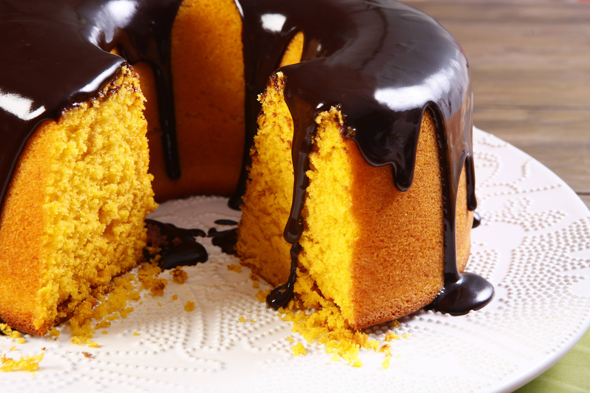

Pao de queijo

Ingredienten
- 500 g bloem
- 500 g suiker
- 4 wortels
- 1 soeplepel gist
- 2 eieren
- 1 glas melk
- halve glas zonnebloemolie
Bereiding
- In een pot zet de bloem, suiker en gist. En meng goed
- Voeg de eiren, melk en olie toe
- Terwijl je mengt voeg geraspte wortels toe
- Zet alles in een mixer en mix
- Zet het deeg in de oven op 250 graden en wacht 40 minuten